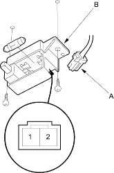

- Remove the glove box (see page 20-220).
- Disconnect the 2P connector (A) from the glove box light (B).
GLOVE BOX LIGHT: 3.4 W

- Check for continuity between the No. 1 and No. 2 terminals.
- If there is no continuity, check the bulb. If the bulb is OK, replace the glove box light.